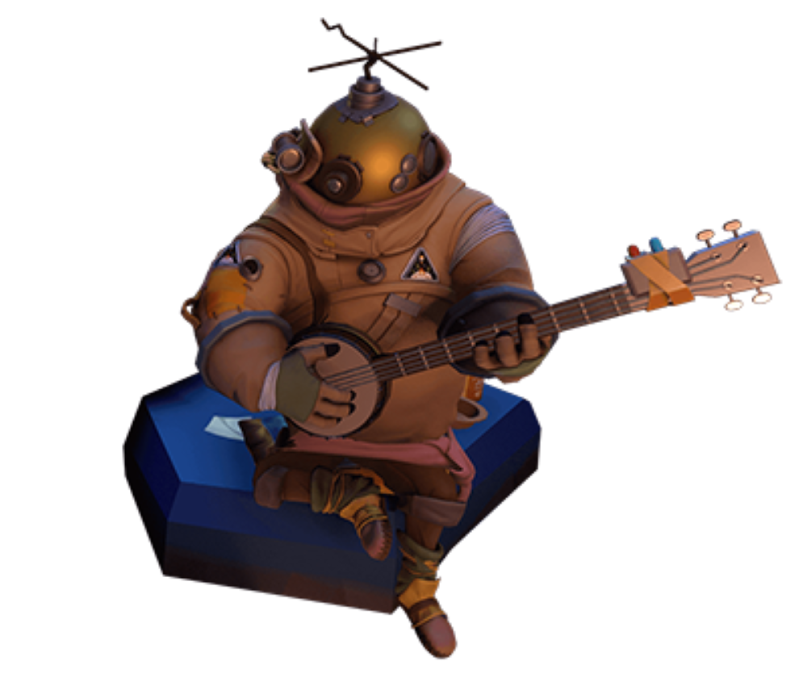
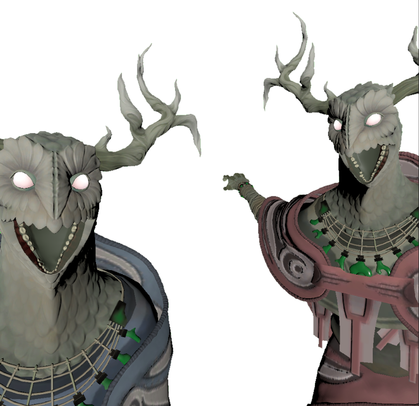
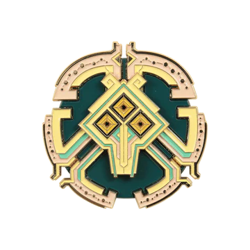

Outer Wilds es un juego de aventuras en un mundo abierto, donde el jugador explora un sistema solar desconocido y descubre sus misterios a traves de ingeniosos rompecabezas y de la observación, la experimentación y el aprendizaje.

Lumbre

Hondonada Fragil

Gemelos Ceniza

Espino Oscuro

Abismo del Gigante
Outer Wilds es un juego unico por su jugabilidad irrepetible que aunque puedas volver a jugralo nunca sera igual que la primera vez, por su historia atrapante y con un muy hermoso mensaje,por su exploracion libre , ya que te deja en un sistema solar sin decirte nada y con solo la mision de explorar sus misterios, y sin duda para mi su mejor apartado es la musica, por sus increibles temas que ayudan con el ambiente y la emociones del jugador, cualquier persona que quiera jugar este juego debe saber casi nada de el, ya que asi se tiene una mejor experiencia, y estoy seguro que su final conmovera a cualquiera.
Usuario: Wuabi
Este juego cambia la manera en la que ves la vida y te emociona de una manera que ningun otro juego lo hace. Tiene el mejor concepto que se haya hecho jamas en un juego y la manera en la que la historia es contada es increible. Por favor jugar a este juego


Usuario: Partepiernas
Desearia borrar mi memoria y jugarlo de nuevo
Usuario: Luzbel316
Juégalo sin buscar nada de información. Es una experiencia que solo se puede tener una vez y lo único que nos queda es ver gameplays de otras personas para intentar recrear el sentimiento que se tiene la primera vez que vez la pantall final

